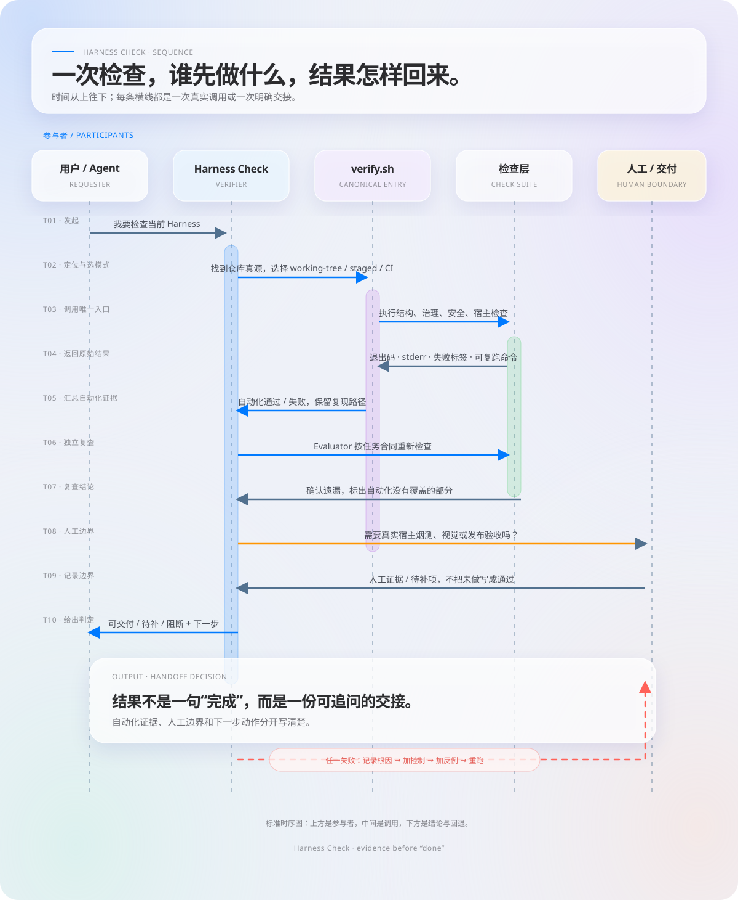

前置配置
告诉 AI 你是谁、任务怎么做、有哪些工具。它解决的是“应该往哪走”。
CLAUDE.md · Skills · MCP · Subagent你已经给 AI 装了模型、工具、Skills 和 MCP，但它还是会犯错。问题通常不在“前置装备不够”，而在于缺了一套能引导、约束、验证、恢复和交付的控制面。
装好宿主、写好规则、接上 MCP，只能说明 Agent 拥有了更多输入和动作。它还不等于知道什么不能做，也不等于做完以后有人独立检查。
告诉 AI 你是谁、任务怎么做、有哪些工具。它解决的是“应该往哪走”。
CLAUDE.md · Skills · MCP · Subagent检查它实际做了什么，在危险动作前阻断，在完成声明后要求证据。
Hook · Evaluator · CI · failures.md不要把 Harness 理解成一份配置文件。它至少包含引导、控制、证据和交付四层，每一层解决不同的失败。

小白不需要第一天接十个工具。先规定边界，再做一个能执行、能失败、能复查的小循环。
明确输入、输出、允许读写的路径、危险动作和“什么证据出现后才算完成”。
只写稳定、具体、能判断对错的规则，不要从一开始堆一份愿望清单。
写清触发条件、输入、输出、必做步骤、人工边界和失败恢复；项目事实留在项目真源。
只读、仓库内写入、外部写入、不可逆动作使用不同的确认策略。
命令、退出码、产物路径、文件摘要和人工待确认边界，不能只写“已完成”。
# 最小项目结构
my-harness/
├── CLAUDE.md
├── .agents/skills/
├── .harness/scripts/verify.sh
├── .harness/hooks/
├── .harness/contracts/
├── .harness/tests/fixtures/
└── .harness/failures.md
规则要能被执行、被检查、被更新。真正有用的规则写清触发条件、动作、边界和完成证据。
# 项目工作规则 ## 工作范围 - 只修改当前仓库内的源码和配置。 - 生成物放入临时目录，截图验收后删除中间 HTML。 ## 危险动作 - 删除、强制推送、覆盖外部平台内容前必须先询问。 - 不使用 `--no-verify` 绕过检查。 ## 完成标准 - 运行对应的验证命令并保留退出码。 - 报告修改文件、验证命令、结果和人工边界。
CLAUDE.md 告诉 Agent 规则是什么；Hook 在工具动作真正发生前执行规则。对不可逆动作，只让模型“记住不要做”是不够的。
匹配 rm -rf、根目录和工作区外路径，默认阻断或询问。
覆盖 --force、-f 和保护分支，不只匹配一个字符串。
`.env`、凭证、私钥和授权配置的写入必须进入确认链路。
WRITE · EDIT主 Agent 负责执行，独立角色负责检查，人负责真实宿主、视觉、事实和外部副作用。独立检查者不接受“我已经完成了”作为证据。
--- name: reviewer description: 独立检查 Agent 产物，不修改目标文件 --- 1. 不接受主 Agent 的“已完成”作为证据。 2. 至少提出 3 个潜在问题，或明确检查范围。 3. 自动化检查给出命令和退出码。 4. 缺证据时返回 partial 或 blocked，不猜测通过。
目标和范围 · 期望产物 · 验证命令 · 文件摘要 · 安全边界 · 自动化证据 · 人工证据 · 未决风险
长任务的问题不是模型不会写，而是上下文会增长、状态会丢失、完成标准会变模糊。高级 Harness 用结构化状态替代对一段聊天的依赖。
重新装载目标、当前状态、已有证据、未闭风险和下一步允许动作。
把大任务拆成有输入、动作、检查、输出和 checkpoint 的短周期。
逐个追问组件最初补了什么缺口；没有独立价值的脚手架应该被删除。
# 一个 Sprint 的完成门
Sprint N
├── 输入：上一个 checkpoint + 当前目标
├── 动作：限定范围内的实现
├── 检查：正例、反例、Evaluator
├── 输出：产物 + 证据 + 未决风险
└── checkpoint：可恢复状态
`failures.md` 不是抱怨区，而是 Harness 的训练数据和回归入口。每条失败都要完成一次“现象到护栏”的转换。
## 2026-08-17 [误删草稿目录]
### 现象
Agent 把“清理旧版本”解释成删除整个 drafts/。
### 根因
- 规则没有写精确删除范围；
- 没有路径边界反例；
- Hook 没有拦截危险删除。
### 防再犯规则
- 删除前先列出目标并逐项确认；
- 递归删除默认 deny；
- 保留一个应阻断、一个应放行的 fixture。
教程主要回答“如何搭建控制面”；Harness Doctor 站在控制面之外，检查它是否有可信证据。两者不是替代关系，而是构建和验收的上下游。
分数是摘要，不是质量的替身。升级的本质是增加可以被别人复核的证据。
每一步都留下一个能失败的例子，再进入下一步。这样你搭的是工程，而不是配置收藏夹。
在目标 Harness 仓库根目录执行。面向录屏用终端模式，面向网页和 CI 用 JSON 模式。
$ python3 harness_score.py /path/to/harness \
--profile content-agent \
--mode working-tree --mode ci \
--format terminal --live --color always
这段 Ghostty 录屏展示动态进度和颜色结果；完整维度、证据、退出码、宿主边界和 Profile 仍由 JSON Scorecard 承载。
打开交互式 Scorecard →